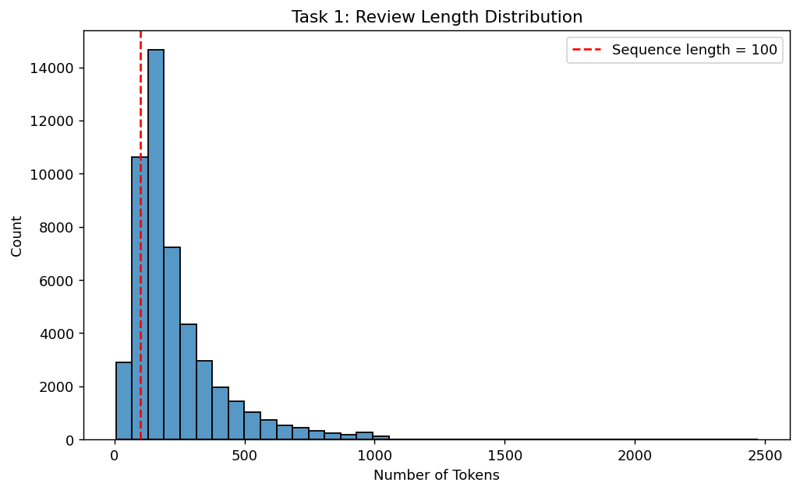
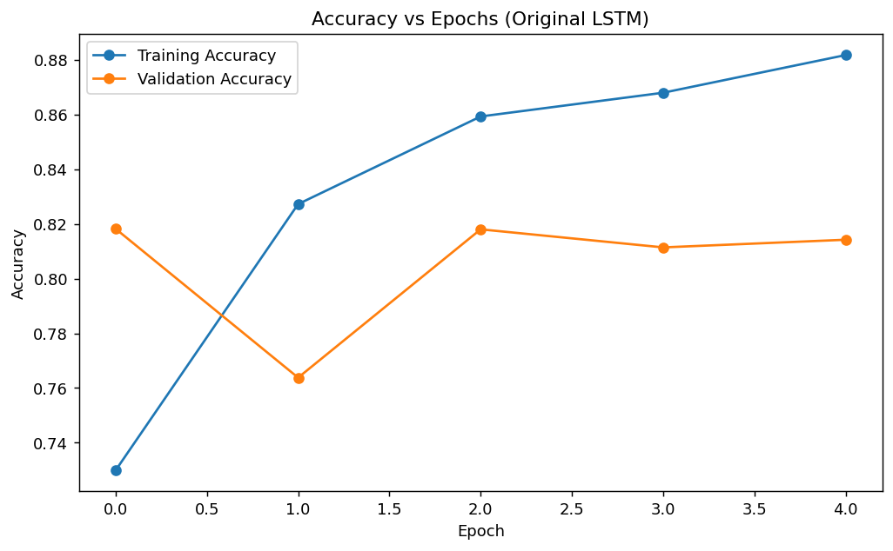
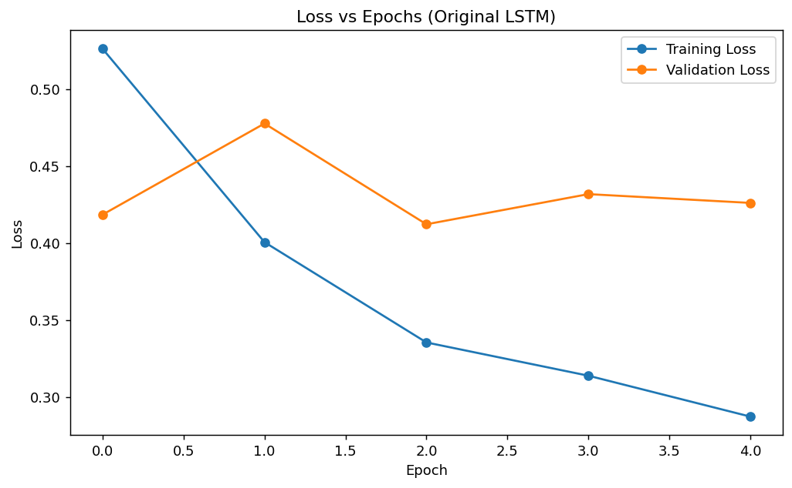

2
Sentiment Classification of IMDb Reviews Using a Long Short-Term Memory Network
Sentiment analysis is a common natural language processing task in which a system determines whether a text expresses positive or negative opinion. In this lab, the objective was to classify IMDb movie reviews into binary sentiment categories. This problem is sequence-sensitive because the sentiment of a sentence often depends on the order in which words appear rather than on isolated tokens alone.
A standard feedforward architecture is limited for this purpose because it does not naturally preserve contextual ordering. Long short-term memory networks are more appropriate because they process sequences while retaining relevant information through gated memory. This makes them effective for phrases such as not good, where the final meaning depends on context.
Scenario
The working scenario for this lab is the development of an automated review analysis system that can identify the sentiment of movie reviews as positive or negative. Because movie reviews are sequential text, the model must be able to understand contextual order rather than relying only on isolated words.
Task 1: Data Preparation
The IMDb movie review dataset used in this experiment contains 50,000 labeled reviews. Before model training, the reviews were cleaned, tokenized, padded, and split into training, validation, and testing subsets. The cleaning stage removed HTML tags, normalized whitespace, retained only relevant characters, and converted all tokens to lowercase.
Table 1
Dataset and Preprocessing Configuration
| Item | Configuration |
|---|---|
| Dataset Source | IMDB Dataset.csv containing 50,000 movie reviews |
| Vocabulary Limit | 5,000 tokens |
| Maximum Sequence Length | 100 tokens |
| Train / Validation / Test Split | 40,000 / 5,000 / 5,000 |
| Padding and Truncation | Post padding and post truncation |
| Label Mapping | Negative = 0, Positive = 1 |
Code Example 1
Cleaning and Sequence Padding Procedure
def clean_review(text):
text = html.unescape(str(text))
text = re.sub(r"<[^>]+>", " ", text)
text = text.replace("\n", " ")
text = re.sub(r"[^a-zA-Z0-9' ]+", " ", text)
text = re.sub(r"\s+", " ", text).strip().lower()
return text
tokenizer = Tokenizer(num_words=5000, oov_token="<OOV>")
tokenizer.fit_on_texts(train_df["review_clean"])
X_train = pad_sequences(train_sequences, maxlen=100,
padding="post", truncating="post")Padding is necessary because text sequences vary naturally in length, whereas mini-batch training requires all inputs in a batch to share the same shape. Selecting a fixed sequence length also improves efficiency and keeps the input representation consistent across the experiment.
Figure 1
Sample normalized reviews after the cleaning stage

Note. These examples were used to visually verify that the review text had been normalized correctly before tokenization.
Figure 2
Distribution of review lengths in tokens

Note. The selected maximum sequence length of 100 tokens provides a balance between contextual coverage and computational cost.
Task 2: Model Construction
The baseline model used in this lab consists of an embedding layer, a single LSTM layer, and a sigmoid output neuron. The embedding layer converts token identifiers into dense word vectors, the LSTM captures sequential dependencies, and the sigmoid unit outputs the probability of positive sentiment.
Code Example 2
Baseline and Configurable LSTM Model Definitions
model = tf.keras.Sequential([
tf.keras.layers.Embedding(input_dim=5000,
output_dim=64,
input_length=100),
tf.keras.layers.LSTM(64),
tf.keras.layers.Dense(1, activation='sigmoid')
])
def build_lstm_model(max_len, lstm_units=64,
dropout_rate=0.0, learning_rate=1e-3):
model = tf.keras.Sequential([
tf.keras.layers.Embedding(input_dim=MAX_WORDS,
output_dim=EMBEDDING_DIM,
input_length=max_len),
tf.keras.layers.LSTM(lstm_units, dropout=dropout_rate),
tf.keras.layers.Dense(1, activation="sigmoid"),
])
model.compile(optimizer=tf.keras.optimizers.Adam(learning_rate),
loss="binary_crossentropy",
metrics=["accuracy"])
return modelLSTM was selected instead of SimpleRNN because its gated structure is better at retaining important contextual information over longer sequences. This property is especially useful in sentiment analysis, where negation, contrast, and emphasis often change the meaning of a sentence.
Task 3: Training and Evaluation
Baseline Model Performance
The original model was trained for five epochs with batch size 32. The results indicate effective learning on the training set, but the validation metrics reveal a modest generalization gap.
- Training accuracy: 0.8817
- Validation accuracy: 0.8142
- Training loss: 0.2873
- Validation loss: 0.4262
- Test accuracy: 0.8164
- Test loss: 0.4230
Code Example 3
Baseline Training Procedure
history_original = original_model.fit(
X_train_original,
y_train,
validation_data=(X_val_original, y_val),
epochs=5,
batch_size=32,
verbose=1,
)
original_test_loss, original_test_acc = original_model.evaluate(
X_test_original, y_test, verbose=1
)Figure 3
Training and validation accuracy for the baseline model

Note. The validation curve remains below the training curve, which suggests limited generalization relative to training performance.
Figure 4
Training and validation loss for the baseline model

Note. The consistently higher validation loss supports the interpretation of mild overfitting.
Task 4: Parameter Modification
Modified Model Performance
To improve performance, the number of LSTM units was increased from 64 to 128 and a dropout rate of 0.3 was introduced. The revised model aimed to combine stronger representational capacity with regularization.
Code Example 4
Updated LSTM Configuration
modified_model = build_lstm_model(
max_len=100,
lstm_units=128,
dropout_rate=0.3,
)Table 2
Comparison of Baseline and Modified Models
| Model | Train Acc. | Val. Acc. | Test Acc. | Train Loss | Val. Loss | Test Loss |
|---|---|---|---|---|---|---|
| Original | 0.8817 | 0.8142 | 0.8164 | 0.2873 | 0.4262 | 0.4230 |
| Modified | 0.8826 | 0.8318 | 0.8318 | 0.2818 | 0.3979 | 0.4001 |
The modified model improved both validation and test accuracy to 0.8318. This suggests that the revised configuration achieved better out-of-sample generalization rather than simply memorizing the training set more strongly.
Figure 5
Validation accuracy comparison for the two LSTM configurations

Note. The modified architecture produced stronger validation behavior across the training period.
Task 5: Final Prediction Analysis
Custom Prediction and Test Review
The modified LSTM was selected as the final model and evaluated on custom review samples as well as the held-out test set.
Table 3
Predictions for Custom Review Samples
| Review | Predicted Probability | Predicted Sentiment |
|---|---|---|
| This movie was absolutely amazing | 0.9819 | Positive |
| This movie was not good at all | 0.2619 | Negative |
| The acting was great but the story was too slow and boring | 0.0548 | Negative |
| I really loved the characters and the ending was satisfying | 0.9863 | Positive |
| I expected something better, and honestly it was a waste of time | 0.0165 | Negative |
Figure 6
Confusion matrix for the final model

Note. The final model showed balanced but slightly stronger recognition of negative reviews.
Code Example 5
Classification Report for the Final Model
precision recall f1-score support
Negative 0.7991 0.8864 0.8405 2500
Positive 0.8725 0.7772 0.8221 2500
accuracy 0.8318 5000
macro avg 0.8358 0.8318 0.8313 5000
weighted avg 0.8358 0.8318 0.8313 5000Discussion
The findings of this lab show that LSTM is better suited than SimpleRNN for sentiment analysis because it can preserve useful context across longer sequences. The memory cell allows the network to connect earlier and later words, which is necessary for phrases in which negation changes polarity. Padding was also a necessary preprocessing step because variable-length reviews cannot be trained in batches without converting them to a common shape. Increasing the number of hidden units gave the model greater representational capacity, and the addition of dropout improved its ability to generalize.
Conclusion
This lab demonstrated the use of a long short-term memory network for binary sentiment analysis on IMDb movie reviews. The workflow included review cleaning, tokenization, padding, baseline model training, architectural modification, and final performance evaluation. The revised model outperformed the baseline and achieved 83.18% test accuracy. Overall, the experiment confirms that sequence-aware neural models are effective for text classification tasks in which context strongly influences meaning.
References
- Goodfellow, I., Bengio, Y., & Courville, A. (2016). Deep learning. MIT Press.
- Hochreiter, S., & Schmidhuber, J. (1997). Long short-term memory. Neural Computation, 9(8), 1735-1780.
- Maas, A. L., Daly, R. E., Pham, P. T., Huang, D., Ng, A. Y., & Potts, C. (2011). Learning word vectors for sentiment analysis. In Proceedings of the 49th Annual Meeting of the Association for Computational Linguistics: Human Language Technologies (pp. 142-150).